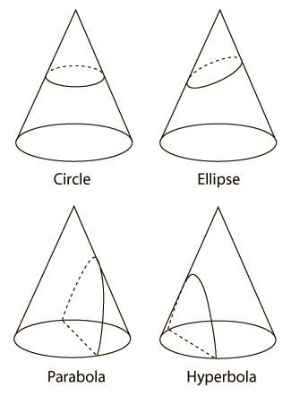
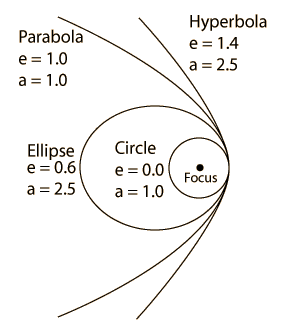
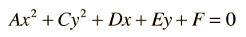

Conic Sections
The curves you get when you slice a cone are called conic sections and have many applications. Click on one for further details.
| 
| One application is that a moving particle that is subjected to an inverse square law force like gravity or Coulomb's law will follow a path described by one of the conic sections. |
Each of the conic sections can be described in terms of a semimajor axis a and an eccentricity e. Representative values for these parameters are shown along with the types of orbits which are associated with them. |  |
Every equation of the form

is a conic section except for certain degenerate cases where the equation describes just points or lines. The conditions for the conic sections described above are
- Circle: A and C equal and not zero.
- Ellipse: A and C unequal but have the same sign.
- Parabola: Either A or C (but not both) is zero.
- Hyperbola: A and C have opposite signs
|